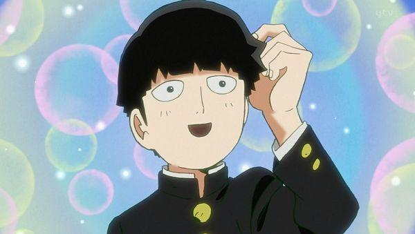

超能力者でありながらかなり虚弱体質で、軽度の貧血を起こしています。自分を抑えていたために自分の気持ちに気づきにくく、普段は無表情であまり感情を表に出さないので、理解してもらえる人は少ないのです。強力な超能力者だが、「超能力を人に使ってはいけない」という原則のもと、超能力は生活に必要ではなく、超能力では手に入らないものが多いため、基本的には使っていない。過去に感情が暴走して弟が怪我をしたことがあり、超能力を抑圧すると同時に感情も抑圧していたのですが、そのために感情が抑えきれなくなる(100%)と感情が解放されると同時に抑圧されていた超能力も完全に解放されます。
